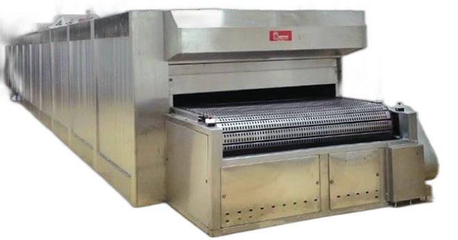
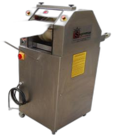
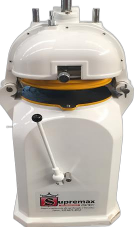
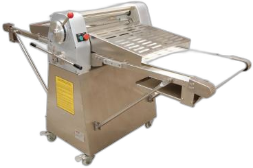
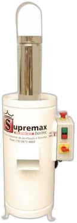

01

Forno Túnel
Ideal para produções contÃnuas, com excelente aproveitamento térmico, durabilidade e baixo consumo.
Produtos
Linha selecionada para produção de pães, bolos, tortas, salgados, biscoitos, pizzas e massas especiais.

Ideal para produções contÃnuas, com excelente aproveitamento térmico, durabilidade e baixo consumo.

Modelos THOR e de 1 a 6 carros, com aquecimento rápido e padrão uniforme de assamento.

Câmaras independentes com controle de lastro e teto para assar produtos diferentes simultaneamente.

Misturam e cilindram a massa com homogeneidade, controle digital, duas velocidades e temporizador.

Indicados para sovar e homogeneizar massas, com modelos manuais ou semiautomáticos.

Recomendadas para modelar vários tipos e tamanhos de pães, com estrutura total em aço inox.

Divide e corta massas para vários tamanhos de pães por meio de três canais.

Permite dividir e bolear massas em partes iguais, com ajuste para porções de 25 g até 90 g.

Indicada para laminar massas, massas folhadas e croissants, com largura útil de 500 mm.

Para confeitaria, massas leves e lÃquidas, com controle digital de 10 velocidades.

Fatiam pães de massa macia em espessuras de 12 mm e 14 mm.

Utilizado na produção de farinha de rosca, ralando e triturando pães torrados.